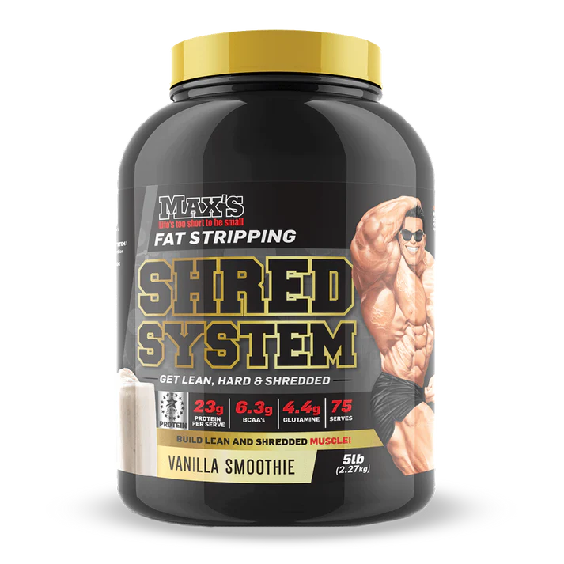
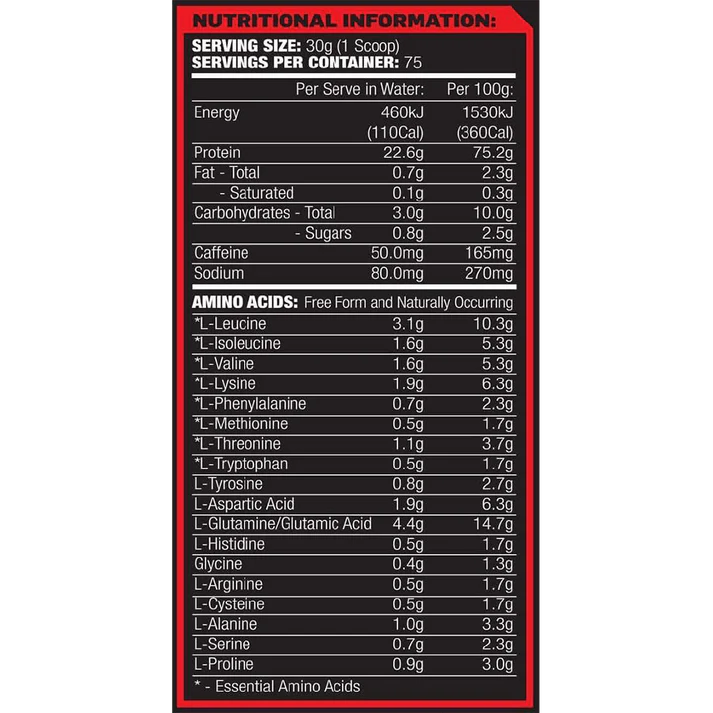
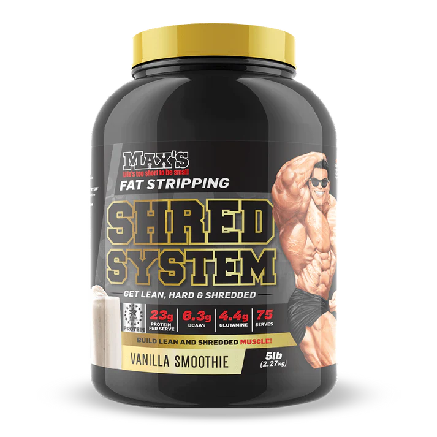
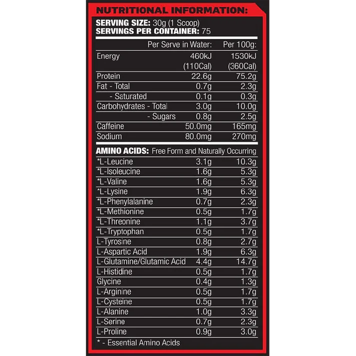

SHRED SYSTEM CREATINE
Maxs Shred System has been created for one purpose, to get you as lean and shredded as possible, whilst still boosting your ability to gain lean muscle.
Managing your weight isn't easy, but Shred System may assist you with this! Shred System incorporates an Anabolic Protein Blend; a mix of 4 different types of protein to sustain and extend your body’s muscle building capacity, but also suppress your appetite. So not only is it helping you to make gains, it’s also helping you stay on top of your diet game.
- Increases Lean Muscle Gain
- Boosts Metabolism
- Enhanced Recovery
- May Assist with fat loss
What products pair well with Shred System?
Max's Creatine Monohydrate: Max's Lab Series Creatine is made from pure micronised creatine monohydrate, the most widely studied form of
creatine, proven to be safe and effective.